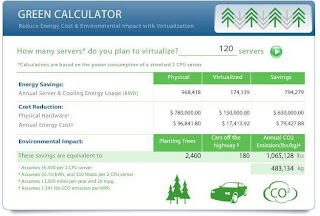

2009-12-11 11:45:00

Com introdução da virtualização no Data-Center pode baixar-se consideravelmente o consumo de energia eléctrica, melhorando a eficiência térmica dos sistemas, reduzindo significativamente o espaço ocupado pelos servidores Intel / AMD x86, SUN Sparc, etc., e sobretudo diminuir os custos de manutenção e administração, ao mesmo tempo que aumenta a sua capacidade de resposta na demanda por recursos, requeridos pelos novos projectos e ainda a fiabilidade e robustez, decorrente de todo o processo de consolidação.
Ao nível da poupança de energia é também assinalável a sua repercussão em termos de redução nos custos e de impacto ambiental, com a consequente emissão de menores quantidades de carbono, como demonstra no modelo de calculadora verde da VMWARE, para um universo médio de 120 servidores Intel virtualizados. Este facto só por si permite-lhe tornar o seu Data-Center inserido numa política também ambientalmente responsável, e numa perspectiva de crescimento sustentável (Ver vídeo sobre Green IT).
Como se pode aferir pela fig 1., a redução de custos directos e indirectos de energia eléctrica é bastante significativa e considero que só por si estes resultados deverão constituir incentivo bastante para iniciar e prosseguir com politicas de virtualização, que possam conduzir e tenham como meta a implementação de uma solução global de infra-estruturas de TI, completamente virtualizada, ao nível do Data-Center (envolvendo sistemas, dispositivos de armazenamento de dados e redes) e dos postos de trabalho, através de arquitecturas de virtualização de nível aplicacional e/ou servidor (ver Whitepaper da Vmware sobre redução custos no Data-Center).
A Virtualização integral de toda a infra-estrutura deverá também ser desenhada de molde a implementar a nova arquitectura de cloud-computing, por forma a dotar-se da capacidade de suportar o fornecimento de "soluções como serviço" (SaaS) para o universo de utilizadores, alicerçando uma nova filosofia de "infra-estrutura como serviço" (IaaS), a qual deverá vir a prestar novos níveis de resposta, fiabilidade, robustez e flexibilidade, tanto a sistemas como a aplicações e utilizadores, nesta nova era da mobilidade e da partilha.
No entanto, deverá desde logo ter em atenção que uma solução global deste tipo pressupõe a existência de uma plataforma de gestão e administração integrada, que irá permitir uma integral supervisão e a completa automatização das operações de "provisioning" e "de-provisioning", e de que resultarão também reduções de custos significativas, relativamente aos recursos técnicos que serão necessários para administrar toda esta infra-estrutura tecnológica consolidada e adequadamente virtualizada.
A virtualização e os processos de consolidação deverão pois ter em conta a criação de recursos e capacidades de automatização das operações no Data-Center, como forma de agilizar a complexidade crescente que aquela, aliada às demandas do negócio, irá necessariamente introduzir (Ver Data-Center Automation @ OpenQrm).
Por último a adequada gestão de imagens das instâncias VM aliada à adopção de "appliances" virtuais para a implementação de novos sistemas e aplicações, na infra-estrutura de Data-Center virtualizada, permitirão ainda uma maior optimização e rapidez na implementação, traduzindo-se em maior agilidade no suporte ao negócio da sua empresa e consequentemente em acrescida redução de custos.
Francisco Gonçalves - IT Architect & Open-Source Strategic Solutions Advisor @ 30 March 2010 @Softelabs.
{kind=link}